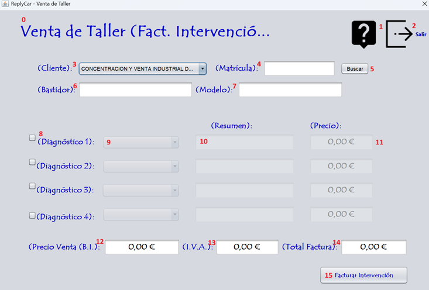

La facturación de la intervención al cliente, en realidad es la facturación de los pasos de taller de un cliente y de las averías de sus vehículos. Sigue las instrucciones de la fotografía para realizar el proceso correctamente. Para facturar la intervención de taller debe ingresar los datos que corresponden a la numeración expuesta en la fotografía. Vamos a proceder:

0 - Título de la pantalla, descripción de lo que significa la pantalla.
1 - Botón para proceder a leer la ayuda de la aplicación.
2 - Botón para salir de la aplicación.
3 - Elige el cliente al que se le va a facturar la Intervención.
4 - Inserta la matrícula a facturar al cliente.
5 - Botón para buscar la matrícula insertada.
6 - Bastidor de la matrícula insertada.
7 - Modelo de la matrícula insertada.
8 - Activar diagnóstico a facturar.
9 - Elegir paquete de intervención a facturar.
10 - Resumen del paquete a facturar.
11 - Precio del paquete a facturar.
12 - Base imponible de la factura total de la intervención.
13 - I.V.A. de la factura total de la intervención.
14 - Importe total de la factura total de la intervención.
15 - Facturar intervención.
Nota: Pulsando F1 en la ventana principal, se abrirá esta página de ayuda.